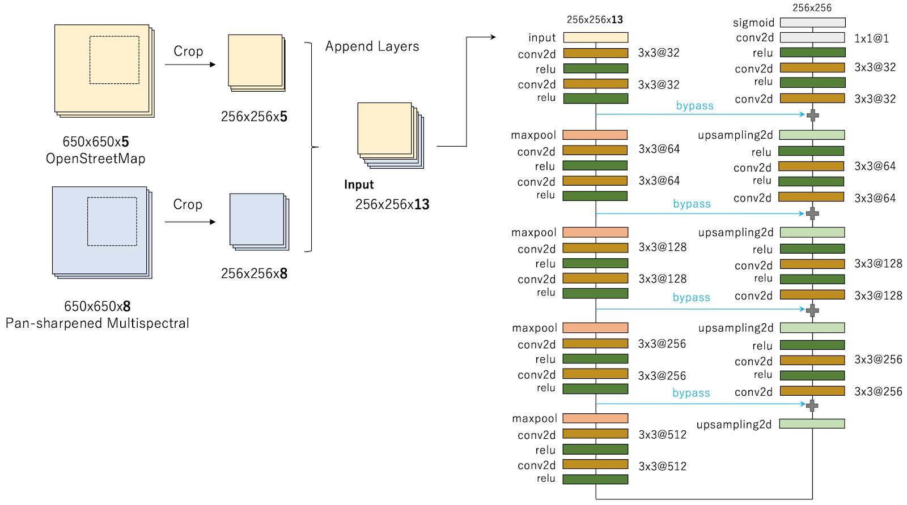
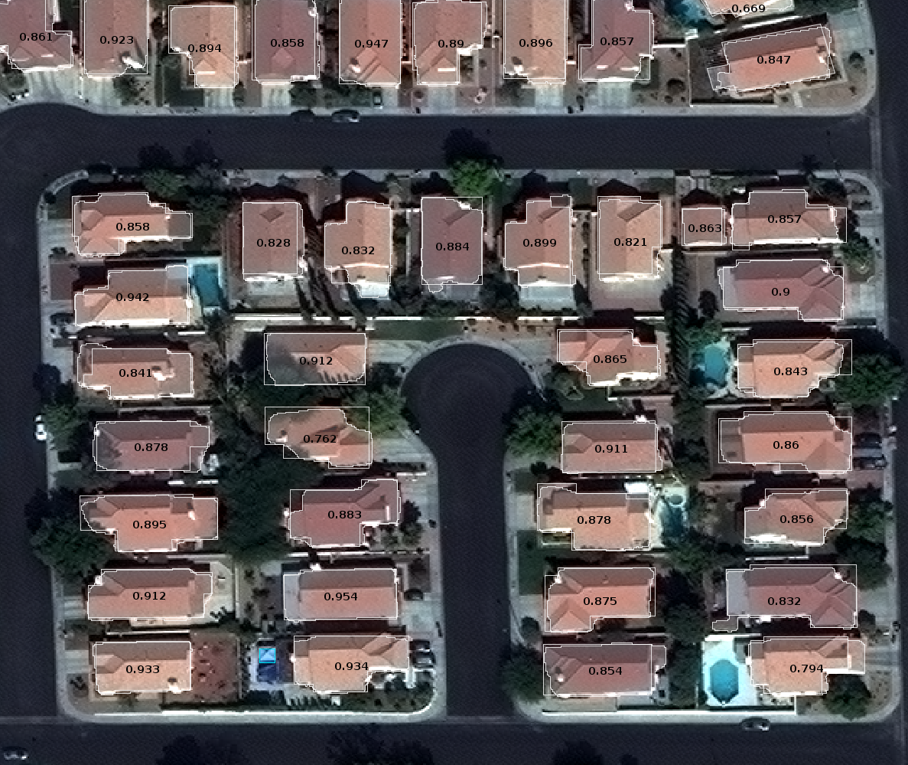
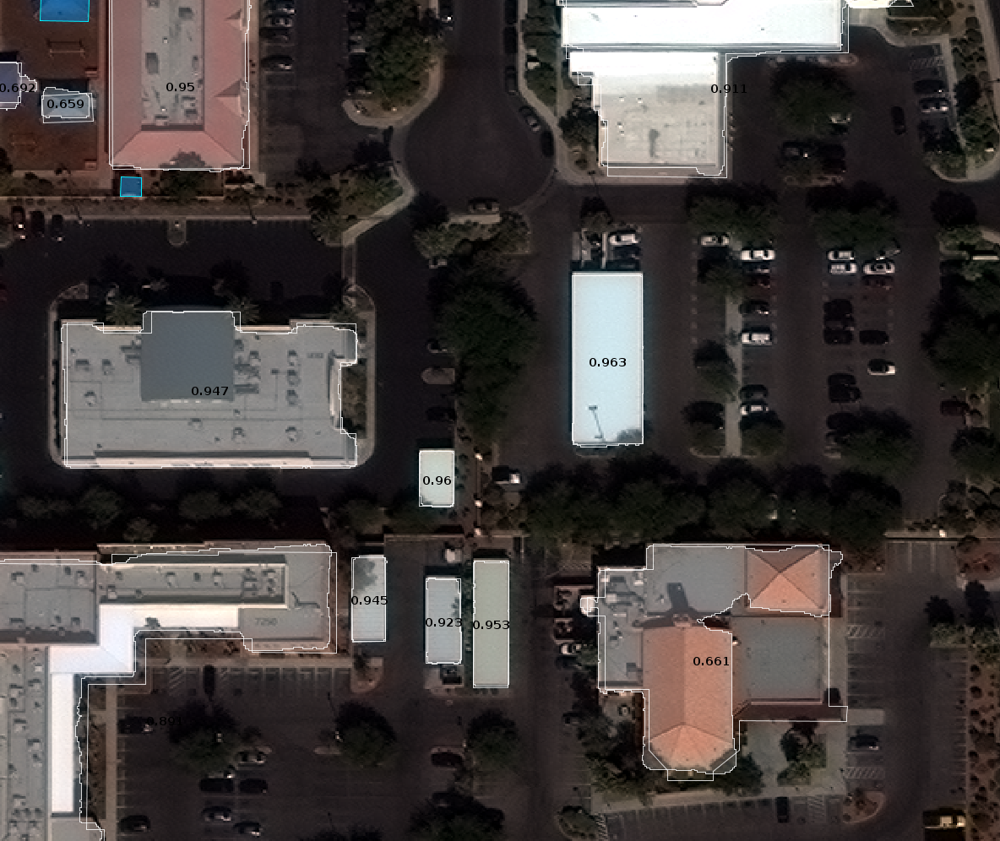
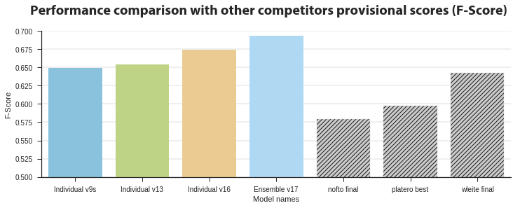
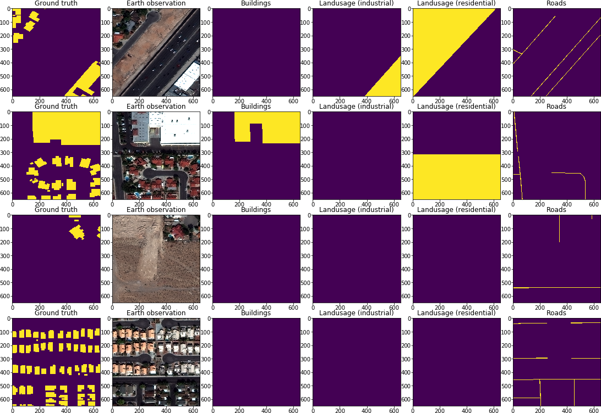
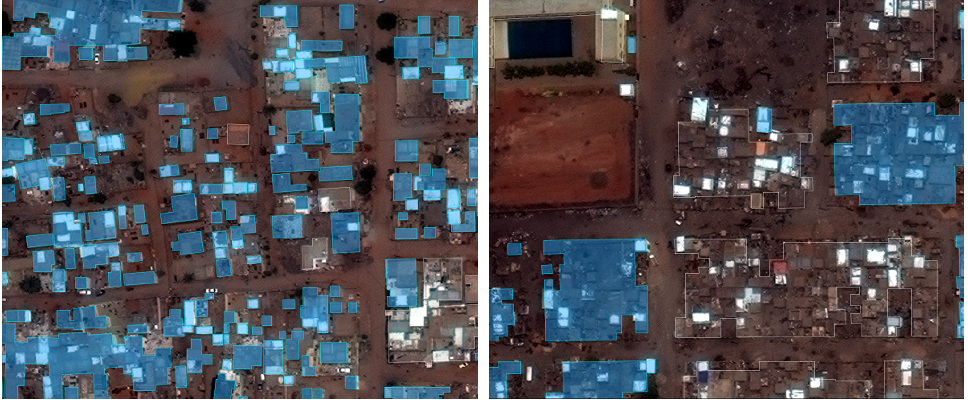
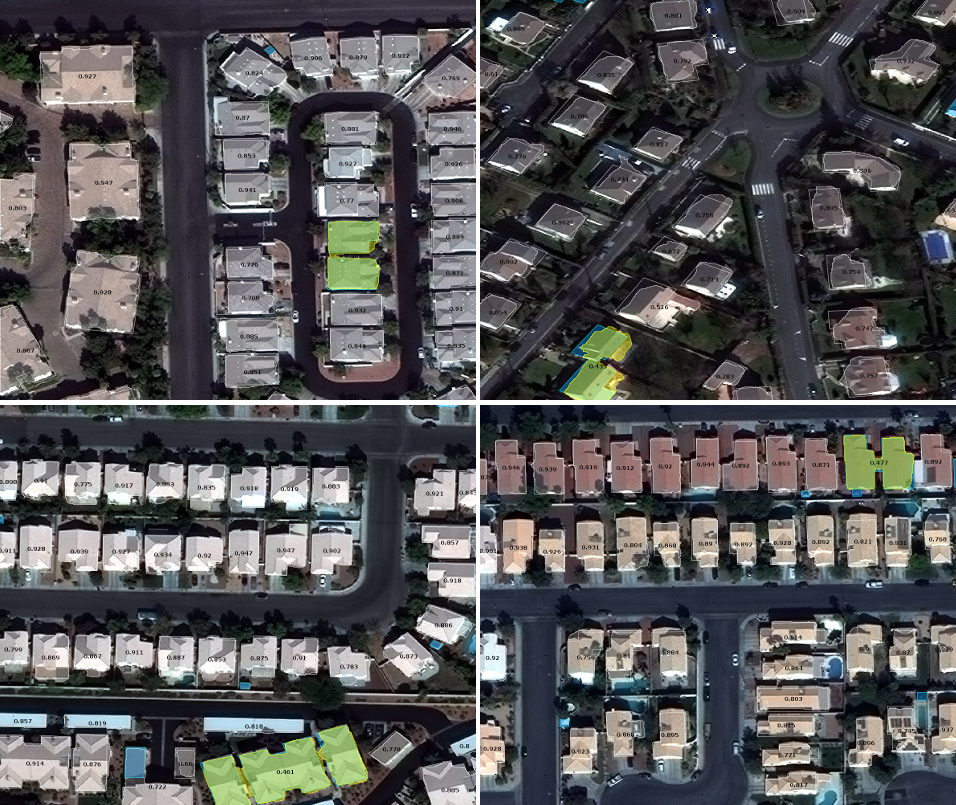
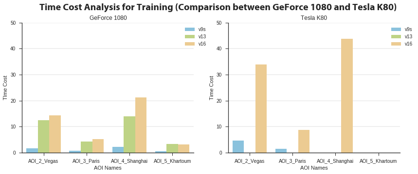

Winning Solution for the Spacenet Challenge: Joint Learning with OpenStreetMap

I won the overall contest and also all the 4 city level prizes on the Spacenet Challenge Round 2. Spacenet is a collaboration between DigitalGlobe (a commercial vendor of space imagery and geospatial content), CosmiQ Works (a division of In-Q-Tel Lab) and NVIDIA (the world leading company in visual computing technologies). It consists of an online repository of freely available satellite imagery, co-registered map layers to train algorithms, and public challenges that aim to accelerate innovation in machine leanring. This blogpost describes my winning solution on the public challenge hosted by Topcoder Marathon Match.
TL;DR,
- Adding OpenStreetMap layers into the input of U-Net model significantly improves F-score.
- The field of GPU computing is quickly evolving. For training a deep neural network model, the computational time on p2.xlarge (Tesla K80, released in 2014) is two times longer than my personal graphic card (GeForce GTX 1080, released in 2016).
The Spacenet Challenge
This competition asks its participants to submit an algorithm that inputs satellite images (of Las Vegas, Paris, Shanghai and Khartoum) and outputs polygons of building footprints. The algorithm is evaluated based on F-score. The polygon of building footprint proposed by the algorithm is considered as a true positive if its IOU (Intersection over Union, Jaccard index) score is higher than 0.5. See Problem Statement for details.
Overview of Winning Solution
I applied a modified U-Net model, one of deep neural network model for image segmentation. My final submission is the averaging ensemble from individually trained three U-Net models. In addition, I found the use of OpenStreetMap data is effective for predicting the building footprint. My best individual model simply uses OpenStreetMap layers and multispectral layers as the input of the deep neural network simultaneously (as described in Figure1).

[Audebert et al 2017], published on May 17, also investigates the use of OpenStreetMap for semantic labeling of satellite image. I individually investigated and evaluated the similar approach on Spacenet Challenge dataset (my first submission with the approach is on May 13, a little earlier than their publication).
Solution Development
Modeling. I solved the problem as a semantic segmentation task in computer vision. My model is based on a variant of fully convolutional neural network, U-Net, which is developed by [Ronneberger et al, 2015]. U-Net is one of the most successful and popular convolutional neural network architecture for medical image segmentation. It can be trained end-to-end from few images and outperform the prior best method on the ISBI cell tracking challenge 2015. Figure 2 shows an example output by my solution with U-Net models. Most building footprints are successfully detected with high intersection area over union (> 0.8). Another example output of L-shaped and concave buildings in Vegas is shown in Figure 2.1. Lee Cohn, a data scientist at CosmiQ Works, described his result of applying the Multi-task Network Cascades (MNC) and MNC struggles with L-shaped and concave buildings. By contrast, my U-Net based model can detect L-shaped and concave buildings successfully.
RGB or MUL. In early stage of the contest, I only used RGB 3 channels. Later I found that using 8-bands multispectral data improves the performance.


Final Approach: Averaging Ensemble of three U-Net based models
Parameter optimization. To develop the individual U-net model, I split the training data into two parts: 70 percent for training and the remaining 30 percent for validation. To avoid overfitting, early stopping with Jaccard coefficient is applied for training. After training the model with 70 percent of the data, the trained model is evaluated on the remaining 30 percent and chose the best one.
Trade-off between precision and recall. I noticed precision on small objects is not good compared with other objects. Consequently, it is possible to improve F-score by eliminating small objects. I searched the threshold size of minimum polygon area by using validation set and eliminated small objects under the area size.
Averaging Ensemble. I created various U-Net models and built an averaging ensemble of three U-Net models. A diverse set of models was selected for ensemble. First model is learnt with global context by rescaling multispectral images from 650x650 pixsels into 256x256 pixsels. Second model uses the original scale multispectral data. Third model uses the original scale and the combination of OpenStreetMap and multispectral data.
OpenStreetMap. Joint learning from OpenStreetMap and multispectral data works. By observation, footprints of residential and industrial buildings has different shape. Obviously, there are no buildings on water area or road in general. I used the layer of residential land use, agricultural land use, industrial land use, water area, buildings and roads on OpenStreetMap. Figure 3.1 shows the example of layers on OpenStreetMap.


Algorithm Limitations
- Low precision for small object, especially in the case of Shanghai and Khartoum.
- As in the case of Khartoum, my solution does not have good results in scenes where annotation rules are not clear, see Figure 4.
- My model is unable to recognize multiple buildings that are close in distance as one building footprint. Examples of false negatives are shown in Figure 4.1.


Further Improvement
- Developing and changing a network architecture could reduce the size of the required graphical RAM and computational time. See also: [Marmanis et al, 2016] and [Nicolas et al, 2017].
- Segmentation nets are numerically unstable. Batch normalization could be effective to the problem. Julian de Wit applied Batch normalization for his U-net model, described on his blogpost. SELUs [Klambauer et al, 2017]? Try it by yourself.
Thought to the Competition
This open dataset is valuable for research communities. Each city on the dataset has enough diversity. On the other hand, the quality of annotation in Khartoum is relatively poor. Annotations of ground truth of Khartoum are difficult and therefore could differ by human annotators.
The design of the final testing guide is good enough to compete. Dockerizing is a good choice even from the perspective of fairness. However, the GPU host (p2.xlarge instance on AWS) used for the final testing phase is not powerful enough. The computation time on p2.xlarge with Tesla K80 is two times longer than my personal machine with GeForce GTX 1080. I was nervous when selecting a model to match the platform. See another story about the performance for reference: "The $1700 great Deep Learning box: Assembly, setup and benchmarks".

Finally, I would like to tell my gratitude to walrus71, who is a co-pilot of the competition. He worked hard for verifying top competitors solutions and helped a lot for the reproducibility. Thanks a lot!
Reference
- [Ronneberger et al, 2015] "U-Net: Convolutional Networks for Biomedical Image Segmentation" https://arxiv.org/abs/1505.04597
- [Marmanis et al, 2016] "Classification With an Edge: Improving Semantic Image Segmentation with Boundary Detection" https://arxiv.org/abs/1612.01337
- [Audebert et al, 2017] "Joint Learning from Earth Observation and OpenStreetMap Data to Get Faster Better Semantic Maps" https://arxiv.org/abs/1705.06057
- [Klambauer et al, 2017] "Self-Normalizing Neural Networks" https://arxiv.org/abs/1706.02515
- Lee Cohn, "Object Segmentation on SpaceNet via Multi-task Network Cascades (MNC)" https://medium.com/the-downlinq/object-segmentation-on-spacenet-via-multi-task-network-cascades-mnc-f1c89d790b42
- "Final testing guide for the Spacenet 2 challenge" https://docs.google.com/document/d/1-Jme2OQEMkegpYbZ10-iqyBJQ9ZWE2ntazWiSanAAbA/edit
O-Ma-Ke
独立請負人として仕事してます。航空写真、衛星画像や地理空間情報に関する研究委託・開発の仕事は歓迎します。ご興味がありましたら eown.erΘgmail.com までお気軽にご連絡ください。